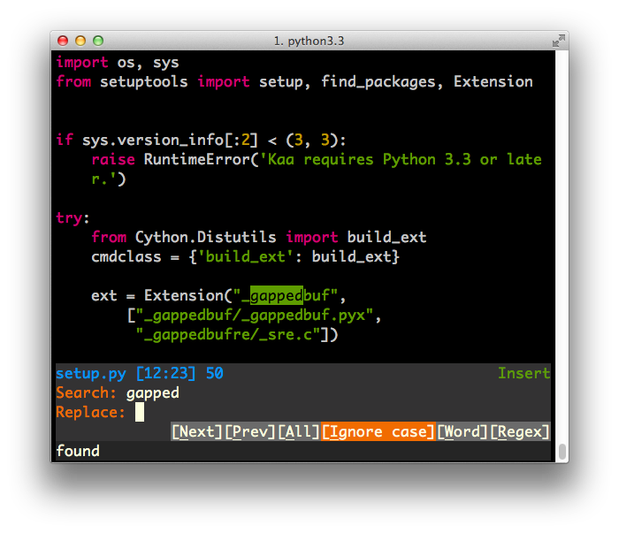
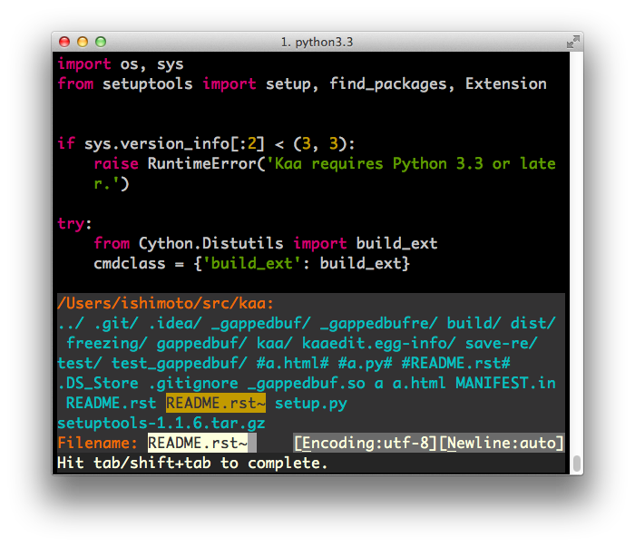
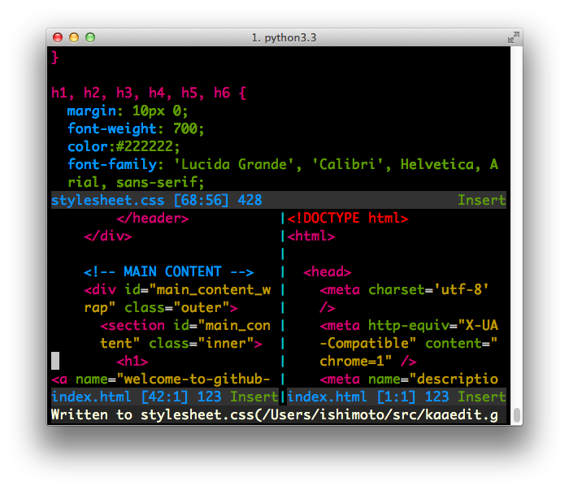
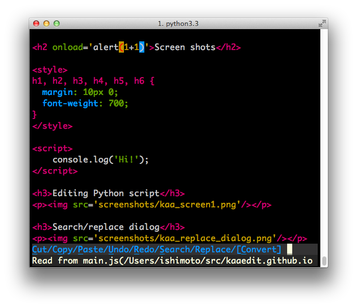

Kaa project page
Kaa is a easy yet powerful text editor for console user interface, providing numerous features like
- Macro recording.
- Undo/Redo.
- Multiple windows/frames.
- Syntax highlighting.
- Open source software(MIT)
- More to come!
Kaa is easy!
Kaa is very easy to learn in spite of its rich functions. Only thing you need to remember is "To display menu, hit F1 key or alt+'/' key". Most of basic feartures could be accessed from fancy menus by hitting underlined character in the menu items. You can use Kaa as easy as you are with Notepad on MS-Windows.Customisable
Kaa is written in Python. So, you can easily customise many aspects of kaa with simple Python scripts.Installation
Kaa requires Python 3.3 or later. After you setup Python 3.3 and some other libraries, you can install kaa from Python Package Index(PyPI).
$ easy_install3 kaaedit
See PyPI page for details.
Prebuilt binary for Mac OS X
For Mac OS X 10.8, there is an experimental standalone binary package.
If you have Mac OS X box and don't want to bother installing Python 3.3, you can just untar the package and run bin/kaa in the terminal.
Links
Screen shots
Editing Python script
Search/replace dialog

File open dialog

Multi files/Multi windows

Syntax highlighting HTML source

In the HTML above, CSS and JavaScript elements are highlighted correctly.